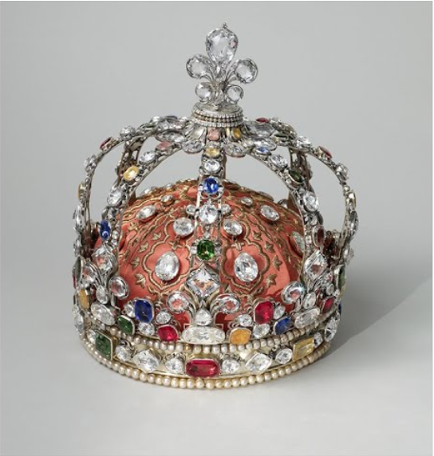
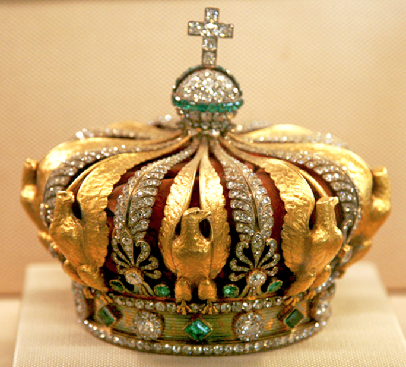
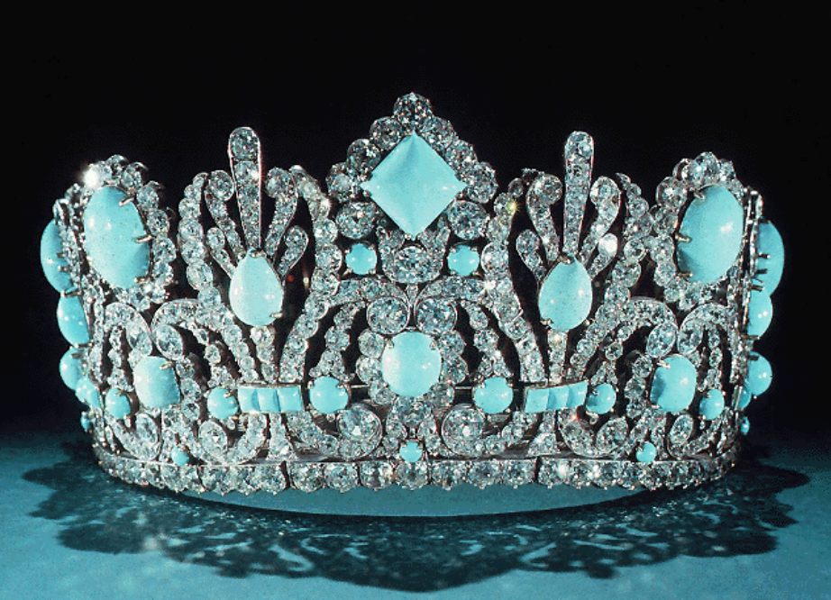
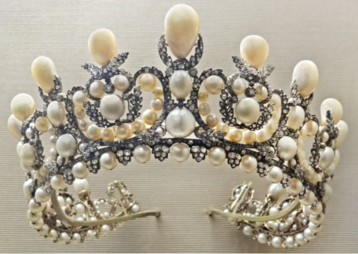
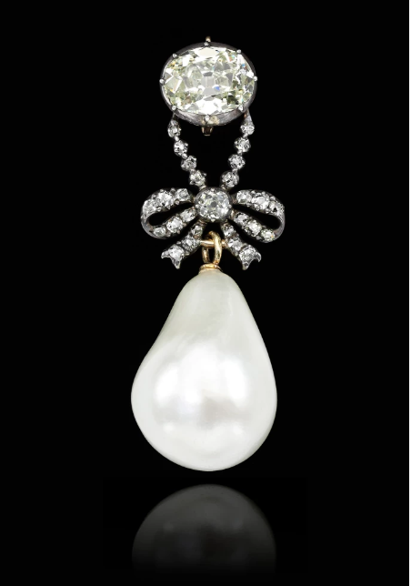
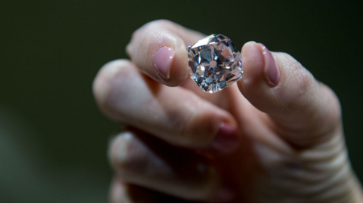
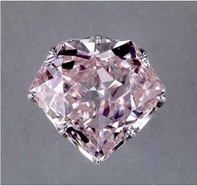
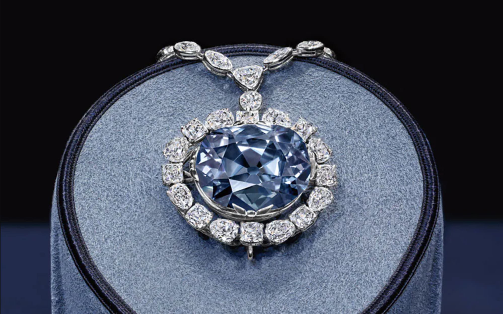
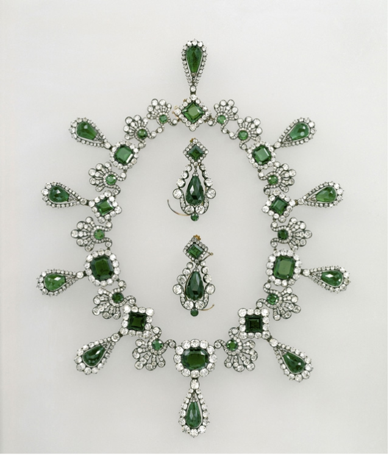

Treasures that were formerly only owned by French kings and queens were made available to the highest bidder in 1887. The Third Republic government created a case to get rid of the gems by branding them frivolous, thus ignoring the historical significance of the collection. From a position of authority, a deputy proclaimed: "A democracy that is sure of itself and confident in the future has a duty to rid itself of these objects of luxury, devoid of usefulness and moral worth."
The real reason for the government's indignation was something very different. With a slim margin of victory, the Third Republic took over in 1871 following the fall of Napoleon III. The restoration of monarchy by the Bourbons, Orleanists, or Bonapartists was a continuous worry for Republicans. If the diamonds stayed in the French treasury, they were worried that anyone whose family had worn them may suddenly claim ownership of them and the political influence they stand for.
Undoubtedly, the collection's past served as a potent symbol of the monarchy. After being compelled to give up his personal jewels as ransom during an Italian battle, François I established the French Crown Jewels in 1525. Later kings increased their holdings. Louis XIV amassed a considerable diamond collection. The holdings were expanded by succeeding kings. Among the many big diamonds owned by Louis XIV was the 19.07-carat pale pink Grand Mazarin.
The elegant Empress Eugénie, wife of Napoleon III, was the final person to leave their mark on the French Crown Jewels. She removed a few items from the collection and then gave the jewels to experienced jewelers. Numerous bows, stars, crescents, flowers, and neo-classical motifs were incorporated into the creations made with the stones for Eugénie. It was a stunning fusion of the most current fashion trends and the historical jewels that the empress treasured from her forebears.
French jewelers were outraged when the government decided to auction their masterpieces and the country's wealth of valuable stones. In response, the Third Republic consented to designate a modest number of artifacts for state preservation. One stone they chose to keep was the 140.64-carat Regent diamond. Louis XV had made a purchase of it. Napoleon had given an Amsterdam banker the Regent as collateral to underwrite the expense of his army. He wore the diamond in the hilt of his sword after his triumph as a good luck charm. One brooch with two Mazarin diamonds from Eugénie's collection was kept. The Louvre or the Museum of Natural History are where the government kept everything.
With this act of appeasement to the jewelers, the government made another choice that enraged the industry once again. Many jewels were dismantled and sold as segments and loose stones. The government then launched a massive promotion campaign.The collection was photographed by photographer Berthaud for a catalog that was delivered to potential bidders—diamond merchants, importers, and jewelers—all around the world. The press also received images. Even pictures from behind-the-scenes of Berthaud's photo shoot at the Ministry of Finance were published in the French magazine L'Illustration.
As soon as the catalogs were handed out, jewelers began creating imitations. According to an article in the American trade magazine Jewelers' Circular, New York diamond importer Alfred H. Smith & Co. had a copy of the catalog and "cordially invited their friends and patrons to call and examine them." It was a code used to order their own set of the jewels.
On May 12, 1887, the nine-session auction's final session opened in the state rooms of the Louvre, confirming the worst suspicions of the Third Republic. Members of the French royal family known as the Orleanists stepped up to bid on what they viewed as their inheritance. Ultimately, though, they were unable to outbid a strong assortment of jewelers who were anxious to buy the products for their customers.
Frédéric Boucheron, a young jeweler, took home the Grand Mazarin. The tiara with a Greek key pattern that had been fashioned in 1864 received the highest price from Bapst, the jeweler of choice of Empress Eugénie. A piece created by Bapst in 1868 was picked up by a jeweler working on behalf of the British royal family.
The American jeweler Tiffany emerged as the surprise winner of the auction, taking home more than two thirds of the items and instantly owning hundreds of years of history. Tiffany neatly packaged the history and sold its wares in custom-made leather boxes with "Diamants de la Couronne" stamped in gold on the top and "Tiffany & Co. New York and Paris" on the satin of the inside lid.
In the 131 years since the French Crown Jewels were sold, only a few of the jewels have been visible to the general public. A piece of Eugénie's currant leaf bodice adornment showed up on the market in the 1930s at Paul Flato's store in New York.
When opera singer Lucrezia Bori retired, the Metropolitan Opera in New York City gave her a gift on behalf of the organization. The rusted silver gem was dipped in platinum to reflect modern jewelry trends. In her will, Bori gave the institution back the brooch, which was displayed there all through the season. The decision to deaccession the treasure was made by the MET in 2014. A private collector purchased it from Christie's for $2.3 million.
When opera singer Lucrezia Bori retired, the Metropolitan Opera in New York City gave her a gift on behalf of the organization. The rusted silver gem was dipped in platinum to reflect modern jewelry trends. In her will, Bori gave the institution back the brooch, which was displayed there all through the season. The decision to deaccession the treasure was made by the MET in 2014. A private collector purchased it from Christie's for $2.3 million.
In 2015, the 19.07-carat Grand Mazarin, a dreamy light pink, reappeared in public. The gem sold for little over $14 million at Christie's Geneva in November 2017. The public is unaware of its whereabouts at this time.
With the accession of Catherine II (1762-1796), the Russian Empire was able to wage wars and conquer new lands once more. Additionally, it put down a significant peasant uprising led by Pugachev. Catherine went toward the Black Sea while Peter the Great expanded Russia toward the Baltic. As a result, Russia had finally emerged as a major player, and it would now continue to conquer Siberia and other parts of Europe and Asia. The Romanovs were now regarded as one of Europe's most significant dynasties.
Paul, Catherine's son, succeeded her. In order to prevent the spread of ideas from the French Revolution after assuming power in 1796, Alexander invited Russia to join the Second Coalition with England and Austria against France. Paul reunited with Napoleon Bonaparte in 1800 after being dissatisfied with England's apathy and broke diplomatic ties with London. Later, his officers turned against him, planning a plot to assassinate him in 1801. Alexander, Paul's son, succeeded his father.
The crowns, orbs, scepters, diadems, and gems that served as emblems of Royal authority between 752 and 1825 are collectively known as the French Crown gems (French: Joyaux de la Couronne de France). Napoleon the Emperor and a number of French Kings and Queens both wore these. Finally, the set was disassembled, with the Third Republic selling off the most of it in 1885. The Regent Diamond, the Sancy Diamond, and the 105-carat (21.0 g) Côte-de-Bretagne red spinel, carved into the shape of a dragon, are on display in the Galerie d'Apollon of the Louvre, France's foremost museum and former royal palace. The remaining French Crown Jewels are primarily a set of historical crowns, diadems, and parures. Additionally, several precious stones and jewelry are on exhibit in the Treasury vault of the Mineralogy gallery of the National Museum of Natural History, including the Emerald of Saint Louis, the Ruspoli sapphire, and the diamond pins of Queen Marie Antoinette.
TThe Louis XV crown is one of just six French crowns still in existence, along with others from the 19th century. The Crown Jewels were decided to be sold in 1885 by the French Third Republic. The Louis XV crown was preserved because of its historical significance, but glass in lieu of the valuable stones that it once held.
The gilded silver crown with precious stone adornments was conceived by jeweler Claude Rondé and created under his supervision by Augustin Duflos in the Louvre's studio of Laurent Rondé, Claude's father and the king's jeweler.

The Sancy served as the center of the apex flower at Louis XV's coronation in 1722, while the Regent was set in the midst of the frontal lily. After the coronation, replicas of the crown's valuable stones and pearls were used in its stead.
The gilded silver headband is embellished all around with imitation diamonds and colored stones that have been carved into faceted shapes and mounted in both silver and gilded metal. Two rows of faux pearls are used to trim the edges. Eight fleur-de-lys in the shape of faceted cut imitation diamonds are put above the band. They alternate with appliqués made of openworked silver that are partially gilded and set with imitation diamonds and faceted cut colorful stones.
The obverse and reverse of each fleur-de-lis are embellished with eight openwork gilded silver hoops that are set with faceted cut colorful stones and imitation diamonds. The arches form a dome that covers the crown; they are arched and connected at their tops to a top button. The top button is topped with a big fleur-de-lys made of faceted cut imitation diamonds and set on money. The base of the top button is embellished with two rows of faceted cut imitation diamonds framing a row of fake pearls.
A crimson silk satin cap with gold thread embroidery is fastened inside the crown. Eight triangular pieces that have been stitched together form the cap. Three imitation faceted cut diamonds are stitched down the length of each of these panels in rows of decreasing size as they approach the top of the cap. The stones are set in silver mounts. This one has a faceted cut imitation diamond set in a silver setting that is sewed to the fabric as decoration. When the crown was restored in 2009, the purple cap mentioned in Le Mercure (1722, November, 1st) was tucked beneath this red cap.
The Empress's crown is modeled after an imperial coat of arms from the First Empire and follows a design approach that is common in depictions of imperial crowns. The eight eagle-shaped arches were built of chased gold, while the other eight formed palmettes with a big central diamond. Two emeralds flank each palmette. Under a diamond globe embellished with a circle and a semicircle made of 32 emeralds and crowned with a cross made of six magnificent diamonds, the arches converge.
A significant portion of the Crown diamonds were used for the Emperor's crown; fewer Crown diamonds were utilized for the Empress's crown. On the other hand, the Emperor owned the emeralds.
In imperial symbolism, the eagle and palmette symbols frequently appear. Although it was supposed to be the same shape, the Emperor's crown has since vanished.

Napoleon III intended to wow everyone in the globe during the Universal Exhibition in Paris in 1855, so he presented the Crown diamonds, which had been put back together especially for this event. With some of these diamonds, Alexandre-Gabriel Lemonnier (c. 1808–1884) was tasked with creating the crowns for the Emperor and the Empress. The Empress's crown, which is currently on display at the Louvre Museum, displays both the Second Empire's beauty and the skill of its jewelers.
The jeweler Alexandre-Gabriel Lemonnier (c. 1808–1884), who had already been awarded the Council Medal and the Legion of Honor for his creations, was chosen to serve as the Prince-President (near future Napoleon III)'s jeweler following the London Universal Exhibition of 1851. He presents numerous gems to Eugénie in exchange for their union. In 1853, he was finally chosen to be the crown jeweler. J.-P. Maheu, a jeweler, was given charge of the general structure, while Lemonnier mounted the priceless stones. At the Universal Exhibition of 1855, both were awarded a silver medal for their efforts. The Fannière brothers, Joseph the carver (1820-1897) and Auguste the sculptor (1818-1900), created the models for the eagles. The best goldsmiths in Paris hired these two artists, who also won a silver medal.
On the occasion of their marriage, Napoleon gave the Diadem to the Empress Marie-Louise, his second wife. The 1810-commissioned diadem was originally set with emeralds, which were switched out for turquoise in the middle of the 1950s. It was created by Paris-based Etienne Nitot et Fils. The diadem was one piece of a parure that also featured a necklace, earrings, and comb (disassembled), all made of emeralds, diamonds, silver, and gold. These items are currently in the Louvre. The diadem and its jewelry were left to Archduchess Elise, a Hapsburg aunt, by Marie-Louise.
The jewels and a document proving its lineage were purchased by Van Cleef & Arpels in 1953 from Archduke Karl Stefan Hapsburg of Sweden, one of Archduchess Elise's relatives. The emeralds were taken out of the diadem by Van Cleef & Arpels and sold separately in jewelry pieces between May 1954 and June 1956. In a 1955 newspaper ad, the business offered: "An emerald for you from the historic Napoleonic Tiara..."

Van Cleef & Arpels put the turquoise into the tiara sometime between 1956 and 1962. The turquoise diadem, along with the necklace, earrings, and comb, were on display in 1962 as part of a special exhibition on Empress Marie-Louise at the Louvre Museum in Paris. The diadem was acquired by Marjorie Merriweather Post from Van Cleef & Arpels and donated to the Smithsonian in 1971. The diadem* has an intricate arrangement of scrolls, palmettes, and medallions and is set with 1,006 old mine cut diamonds totaling 700 carats and 79 Persian turquoise stones totaling 540 carats.
The shell of the diadem is made in a style that is remarkably reminiscent of Marie-Étienne Nitot's earlier creations. The diadem is a closed circle that is left-right symmetrical, widest in the front, and narrows toward the back. Silver and gold scrollwork, medallions, palmettes, and other floral patterns were all intricately used by Nitot. It resembles the tiaras and diadems he made for Princess Augusta of Bavaria and Marie-Thérèse, Duchess of Angoulême in this way. Originally, the front of the diadem's centerpiece was a single, 12-carat (2.4 g) enormous square-cut emerald that was oriented with one of its diagonals along the median line.
Five lesser emeralds with rose-cut frames around a smaller oval-cut emerald that was set right beneath the main stone. A single layer of rose-cut white diamonds surrounds the center jewel. In addition to fifty-two smaller rose-cut and square-cut emeralds, which were also framed by a combination of rose-cut and brilliant-cut diamonds, twenty larger emeralds, each cut in the oval and briolette shape, were set into the symmetrical floral and scrollwork designs. A continuous single row of rose-cut diamonds is set into the band that serves as the diadem's basis.
The Marie Louise Diadem contained a total of 1,002 brilliant-cut and 264 rose-cut diamonds of various sizes, weighing more than 700 carats (140 g), in addition to 79 Colombian emeralds "of the highest quality" that were mined in Muzo. Later, the 79 emeralds were taken out and replaced with an equal number of Iranian turquoise stones, most of which were cut as cabochons as opposed to faceted like the original emeralds. Total weight of the turquoise replacement stones is 540 carats (108 g).
Since then, the diadem has been on display at the Smithsonian Institution's National Museum of Natural History in the Janet Hooker Hall of Gems and Geology. In the 1990s, it was taken out of its dual exhibition with the Napoleon Diamond Necklace for a few months when the diadem was given to a conservator-restorer for repair. The old frame was taken apart, cleaned, and put back together while having any damaged pieces soldered. After making the transaction, Post asked if it would be feasible to replace the turquoise with emeralds once more, either synthetically or, if it were possible to get the original gemstones from their new owners, physically. However, the diadem's fragility prevented any further replacement.
The women of the royal and imperial dynasties were renowned for wearing fine jewelry during all of the regal turmoil of nineteenth-century France. The nation's last empress is where the history of today's fairly stunning pearl diadem begins. From there, it travels through various royal houses before coming home.
This tiara was initially a wedding gift, just like so many others. Emperor Napoleon III, Eugénie's husband, gave it to her. Although Alexandre-Gabriel Lemonnier created a brand-new piece, he had access to gems with provenance. The Duchess of Angoulême, the daughter of Louis XVI and Marie Antoinette—remember her, possessor of stunning diamonds and emeralds?—and Empress Marie Louise, the second wife of Napoleon Bonaparte, had already worn gemstones, as did the new tiara. In total, this sparkler, which is made of silver, contains nearly two thousand diamonds and more than 200 pearls.

Throughout her husband's rule, Eugenie frequently wore the tiara, including on a state visit to Windsor Castle in 1855. Winterhalter had her depicted in it on several occasions. Even though the tiara was a wedding gift, it was nonetheless a piece of the French crown jewels, just like the emerald tiara that belonged to the Duchess of Angoulême. As a result, the tiara remained in France when Napoleon and Eugénie were banished to England in 1870. It went on display at the Paris World's Fair and the Louvre Museum before being sold at auction by the government, following in the footsteps of its emerald Angoulême cousin.
But unlike the Angoulême tiara, which spent a century traveling around England, this jewel ended up staying in another royal collection for a century. As a wedding present for his new wife, Archduchess Margarethe Klementina of Austria, Prince Albert of Thurn and Taxis bought it in 1890.
For decades and decades, it stayed with the Thurn and Taxis family. In the end, Princess Gloria, who was lovely and wild, wore it to marry the flamboyant Prince Johannes in 1980. While conducting an interview at her wedding reception, Gloria was caught on camera wearing the tiara.
Following Johannes's passing in 1992, Gloria sold the tiara as part of the extensive, necessary liquidation of family assets. The Friends of the Louvre, who forked for more than a million dollars (USD) for the sparkler, were the buyer in waiting, just as they were for the Angoulême. After a century apart, the two tiaras were brought back together in France in the same magnificent mansion turned museum.
A diamond and natural pearl pendant that was predicted to bring in between $1 million and $2 million in pre-bidding instead brought in a staggering $36,165,090. "Queen Marie Antoinette's Pearl" broke the previous auction record for a genuine pearl with that enormous profit. A big teardrop-shaped pearl hangs from an oval-shaped diamond on the pendant, which also has a series of smaller diamonds strung together in a dramatic bow. The largest stone, which was detached from the other stones in the pendant and served as the necklace's clasp, according to Sotheby's, was once a part of the queen's three-strand pearl necklace.

The pendant is thought to have been among the valuables packed away at night in 1791 as the King and Queen made their escape from the surrounded armed revolutionaries and the besieged Palace of the Tuileries. The meticulously hidden gems were transported from Paris to Brussels and then on to Vienna, where they were placed in the custody of the Austrian Emperor, Marie Antoinette's nephew.
The sole surviving child of the King and Queen, Marie-Thérèse de France, received the jewels much later. She left the current portion of the collection to her niece, the Duchess of Parma. Every portrait created before the royal family's incarceration depicts Marie Antoinette wearing diamonds, pearls, or other costly stones, demonstrating her penchant for ostentatious jewelry.
One of the most famous diamonds in the world, the 140-carat "Regent," is unique in terms of size, weight, and clarity. It is also considered to be "of the first water," or completely translucent. It was discovered in India in 1698, and its radiance was increased through cutting using the recently developed brilliant-cut method. At the time, it was the largest diamond known to man, but due to its astronomical price, not even the Sun King was willing to purchase it. Finally, in 1717, Philippe d'Orléans, Louis XIV's nephew and the Regent of France until Louis XV reached adulthood, bought it and gave it his name. Following that, the Regent diamond was adorned by all subsequent French monarchs, including the Empress Eugénie's tiara, Napoleon I's sword, and Louis XV's crown.
Thomas Pitt, the English governor of Madras, was instantly interested in this stone when it was found in Golconda, India, in 1698. The diamond was cut in England and afterwards purchased at Philippe d'Orléans, the regent's, request in 1717. The Regent was more beautiful and heavier than any diamond ever known to Westerners. Because of its purity and the caliber of its cut, it continues to be regarded as the most beautiful diamond in the world today.

Thomas Pitt, the governor of Fort Saint-Georges in Madras, purchased the stone after its discovery in India in 1698 at a very high cost. Before being cut in England in 1702, the diamond weighed 426 carats at that time. The project took place between 1704 and 1706 and lasted two years. Tsar Peter the Great purchased many secondary stones from the project. The brilliant cut, which was created by a jeweler by the name of Harris, is the pinnacle of a process that may have started in Venice at the start of the 17th century. By using this method, it is possible to create perfectly aligned angles that give the light an unrivaled intensity and brilliance.
Philippe d'Orléans, who served as regent of France from 1715 to 1723, persuaded the Council of Regency to purchase the diamond on June 6, 1717, taking advantage of the economic prosperity brought about by the John Law system under the Regency in France. Le Regent was the largest diamond then known in the West when it was purchased, and by 1719, it had more than tripled in value. It is still regarded as the most stunning diamond in the world today because of its "first water" color, which means that it is completely white and of nearly unquestionable purity. This gem remained one of the most priceless items of Crown property after the Regency and was used to ornament all crowned heads.
When hosting the Turkish Embassy in 1721, Louis XV donned the Regent for the first time. On October 25, 1722, it was then momentarily mounted on Louis XV's coronation crown. The king started wearing the diamond on his hat shortly after his September 5, 1725, nuptials to Marie Leczinska; he continued this practice until the end of his reign. A new crown, like that of Louis XV, was fashioned for Louis XVI's coronation on June 11, 1775, and it was embellished with the Regent on the front.
Louis XVI wore the diamond on his hat much like his grandfather did. It was stolen in 1792, discovered in a frame in 1793, and repeatedly pawned by the Directory and later the Consulate before Napoleon Bonaparte finally reclaimed it in 1801. Then, the goldsmiths Odiot, Boutet, and Nitot used it to adorn the First Consul's sword. Le Régent was added on Napoleon I's sword by Nitot in 1812 as one of its ornaments. It was first placed on the crowns of Louis XVIII, Charles X, and Napoleon III after the transition in power, and then it was placed on the Empress Eugénie's Greek tiara.
Every renowned diamond seems to have some sort of mystery around it, usually concerning the place of finding, the discoverer's name, or a disputed ownership. The Hortensia diamond's naming is where the enigma resides. Not in the sense that a Frenchwoman named Hortense de Beauharnais, who was destined to become Queen of Holland, received credit for naming it; that glory goes to her. The question is why it was given her name in the first place. A notable gemstone is typically given a name by someone who has some kind of personal connection to it. In contrast, the person whose name was given to the diamond in this instance had little to no access to it, never owned it, never wore it, and was never wed to someone who did.
She was the owner's sister-in-law and stepdaughter, which is the strongest relationship that can be drawn. But she is honored in the stone. Since recorded history offers little insight into this mystery's resolution, one is free to come to their own conclusions.

The Hortensia Diamond, a flat, light pink diamond weighing 20.53 carats, has a five-sided outline with a feather, or very small break, running from the girdle to the culet. According to a 1691 inventory list of the French Crown Jewels, it made its initial appearance in a floret of buttonholes under the ownership of French King Louis XIV. Later uses included a mounting for Napoleon's epaulet braid and as the focal point of an Empress Eugénie headband in 1856.
Hortense de Beauharnais, the diamond's namesake, was born in Paris, France. She was the daughter of Marie Rose Joseph Tascher de la Pagerie and Alexandre, Vicomte de Beauharnais. When the marriage failed, Marie Rose's husband filed for divorce, and she and Hortense were both sent to a convent. After the divorce was finalized, Marie Rose brought her young daughter back to Martinique to live with her poor parents. Hortense's father, meanwhile, would not live through the French Revolution and would pass away by guillotine during the infamous "Reign of Terror."
Hortense and her mother eventually made their way back to Paris after spending years growing up in exile on the Island of Martinique. After successfully reentering French society under the name Joséphine, she remarried, this time to none other than Napoleon Bonaparte, a renowned general and future Emperor of France. Hortense, who was now the famous Frenchman's stepdaughter, benefited from being a member of the most influential family in France, including the opportunity to attend school with people like Napoleon's sister and the future American president James Monroe's daughter.
Hortense was paired with Louis Bonaparte, Napoleon's brother, when it came time for her to get married. In an effort to unify all of Europe under his control soon after being declared Emperor, Napoleon made his brother King of Holland in 1806 and made Hortense the nation's queen. Hortense and Louis had a rocky marriage, yet she went to The Hague with Louis to start her new job. Hortense's relationship to the diamond that bears her name is still unmentioned.
Hortense had to endure many personal storms over the years, including an intensely possessive husband, the passing of her eldest son, accusations of infidelity surrounding the birth of her third son (later known as Napoleon III), and actual infidelity leading to the birth of a fourth son who she was open about not having been conceived by Louis. Hortense and Louis got divorced when the French monarchy was restored and Napoleon was banished to Elba. Later, she made an unsuccessful attempt at politics and backed Napoleon after his successful escape from Elba and ascent to power. She was exiled from France as retribution for her support of Napoleon during the Hundred Days. She was now traveling the continent when, in 1817, she finally made her home in Arenenberg, Switzerland, where she remained until her passing in 1837.
Definitely sometime between 1806 and 1817 is when the diamond was given her name. However, there is nothing to show how or why it occurred. Perhaps it was done to show Hortense his appreciation for her support when she became Napoleon's stepdaughter, when she married Napoleon's brother, when she became the Queen of Holland, or perhaps it was done when Napoleon returned from exile. Could there have been an affair between Napoleon and Hortense? In actuality, we might never find out.
That the diamond was taken twice is what is known. The first instance was in 1792, during the French Revolution, when rioters invaded the Garde Meuble (Royal Treasury) and stole the majority of the Crown jewels, including the Hortensia and the Regent. Sadly, a large portion of what was taken was never found. The Royal French Blue, which is now thought to have been recut to become the Hope Diamond, and the Sancy Diamond were among the missing jewels. However, the Hortensia's destiny was to follow a different course. The Hortensia, the Regent, and some other artifacts were found hidden in a garret in the Halles neighborhood of Paris, thanks to the last-minute confession of a condemned man by the name of Depeyron. The Hortensia was taken twice before, most recently in 1830 when it was taken from the Ministry of the Marine.
At the Galerie d'Apollon of the Louvre museum in Paris, the last of the French Crown Jewels are currently on display. Louis XV's coronation crown, Napoleon's coronation crown, Eugénie's tiara from 1853, a crown from 1855, a diamond and sapphire parure worn by Marie-Amelie (1782-1866), wife of Louis-Philippe, the Regent, and Sancy diamonds are all part of this significantly depleted collection. The Hortensia, which is also on exhibit, begs the question of why it was named for someone who has no known connection to the stone, from everyone who visits.
The Diamond is a 45.52-carat (9.104 g) diamond that was first taken from the Kollur Mine in Guntur, India, in the 17th century. Its blue tint is a result of minute levels of boron. Due to its extraordinary size, new details regarding the formation of diamonds have emerged. One of the Golconda diamonds, as the name suggests. According to the oldest records, French gem merchant Jean-Baptiste Tavernier bought it as the Tavernier Blue in 1666. Tavernier sold the stone to King Louis XIV of France in 1668 after it had been cut and given the new name of "French Blue" (Le bleu de France). The greatest portion of the diamond, which was stolen in 1792 and recut, was listed in an 1839 gem catalogue from the Hope banking family under the name of Hope.
The Washington socialite Evalyn Walsh McLean, who frequently wore the diamond, was one of its previous owners. Harry Winston, a New York jeweler, bought the diamond in 1949, took it on the road for a while, and then donated it to the Smithsonian National Museum of Natural History in 1958, where it is now permanently on display.
During the early stages of the French Revolution's Reign of Terror on September 11, 1792, while Louis XVI and his family were detained in the Square du Temple, a group of thieves broke into the Royal Storehouse, the Hôtel du Garde-Meuble de la Couronne (now Hôtel de la Marine), and stole the majority of the Crown Jewels in a five-day looting rampage.The French Blue vanished from history despite the fact that several jewels, including other parts of the Order of the Golden Fleece, were eventually found and retrieved.
Louis XVI was executed by guillotine on January 21, 1793, and Marie Antoinette on October 16 of the same year. The historical evidence reveals that Marie Antoinette had never worn the Golden Fleece necklace because it had been reserved for the King's exclusive use. These beheadings are sometimes attributed to the diamond's "curse," although the historical record suggests that this was not the case.

The French Blue, also known as the Blue Diamond, is most likely to have been "swiftly smuggled to London" after being seized in 1792 in Paris. The French Blue rock, however, was never discovered again since it was probably certainly recut during this protracted time of secrecy, with the largest portion surviving becoming the Hope Diamond. One account said that the cut was a "butchered job" since it removed 23.5 carats from the larger rock and damaged its "extraordinary luster."
The French Blue was thought to have been the source of the Hope Diamond for a long time, but it was only confirmed in 2005 when a three-dimensional leaden model of the French Blue was uncovered in the holdings of the Paris National Museum of Natural History. Only two drawings from 1749 and 1789 had previously been used to determine the French Blue's dimensions; however, the model's details are nearly identical to those of the Hope Diamond, allowing CAD technology to digitally reconstruct the French Blue around the recut stone.
The French Blue's back was shown by the leaden model to have 20 undiscovered aspects. It also proved that the diamond underwent a somewhat sloppy recut that eliminated the three points and slightly decreased thickness. The original cut's baroque aesthetic was obviously gone, and the Sun King's blue diamond lost any resemblance to it. The French Blue and the Côte-de-Bretagne spinel, among other jewels, may have been taken by one thief, Cadet Guillot, to Le Havre and subsequently to London, where the French Blue was split in two.
Napoleon sent Marie-Louise the entire set as a wedding gift, which included a comb, diadem, necklace, and earrings. The necklace consists of ten emeralds that are alternately oval or lozenge-shaped, encircled by diamonds, and spaced by palmettes that each contain a little round emerald. Pear-shaped emeralds are suspended from each of the enormous emeralds. The circular, eight-sided cut central emerald weighs 13.75 carats.
Napoleon ordered two lavish adornments from the Nitot house for his wedding to the Austrian Archduchess on April 2, 1810; one was made of emeralds and diamonds and the other of opals and diamonds. Unlike the two dazzling adornments of diamonds and pearls and diamonds, or adornments of lesser value, such as that in gold and mosaic (Louvre Museum), both were intended to be worn in the young Empress's personal setting. A professional evaluation of the emerald set, which was delivered at the end of March, revealed information regarding its make-up.

François-Régnault Nitot (1779-1853), who had replaced his father Etienne after the latter's passing in March 1809, then oversaw the "Etienne Nitot et fils" residence. Marie-Louise brought all of her finery with her when she left Paris on March 29, 1814; while she had to give back the crown diamonds to the Bourbon ambassador, she kept her own jewelry. Her cousin Leopold II of Habsburg, Grand Duke of Tuscany, received the emerald set as part of her will, and his heirs maintained it until 1953. It was sold to the jewelry store Van Cleef & Arpels on that day. A wealthy American collector bought the diadem, had turquoise placed in its place of emeralds, and left it to the Smithsonian Institution in 1966. The diadem's emeralds were then sold one at a time. The comb has undergone a change.
Fortunately, the necklace and earrings were kept in their original condition, and thanks to the Heritage Fund, they were added to the collections of the Louvre Museum in 2004.
This is a longer card with supporting text below as a natural lead-in to additional content. This content is a little bit longer.
The supposed cursed pearl that was once owned by actress, Elizabeth Taylor. Click here to find out what happened to this beautiful necklace.
The Côte de Bretagne has seen it all: pawned, bought back, missing, cut by Louis XV into a dragon’s shape, causing it to shed a good hundred carats. However, this fascinating stone escaped the worst: the great sale of 1887.
The Talisman of Charlemagne: New Historical and Gemological Discoveries